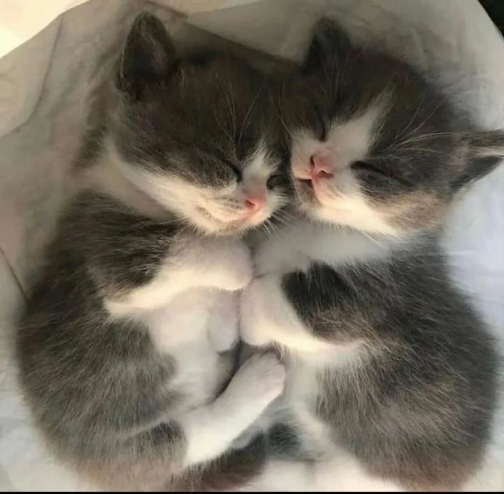
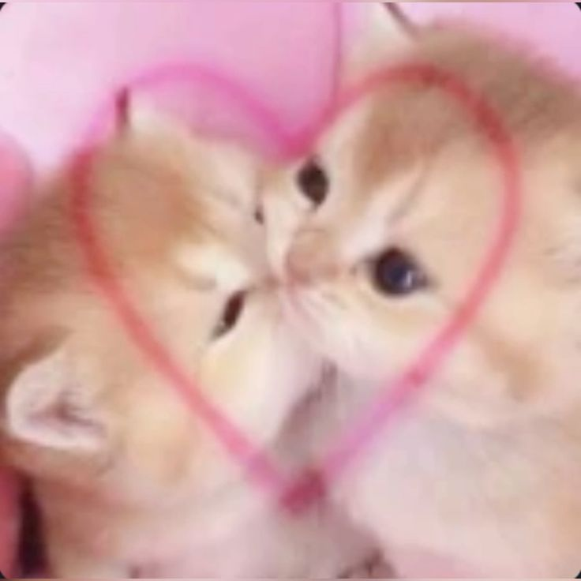
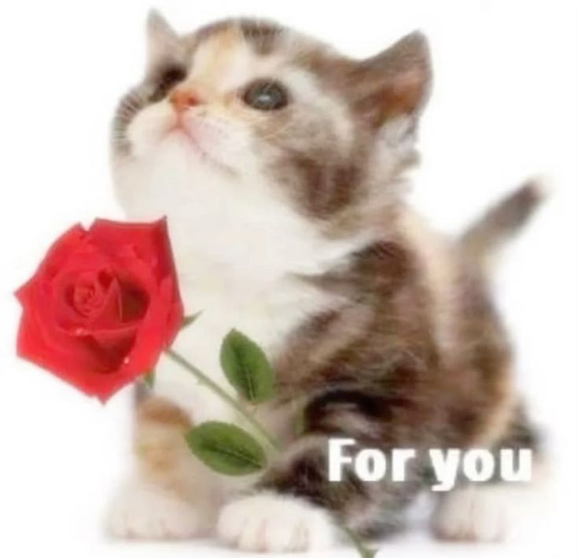

Quería decirte que te amo mucho, me encantas, amo tus ojos,
tu vocecita, amo todo de ti. Y bueno, como tu linda y simpática
novia (AKJSAKSJAS) te ama tanto, decidió hacerte una página
(ohsiohsi JKASAKSJ). Espero sea de tu agrado. Sé que tal vez
no sea la gran cosa, pero quise poner en práctica todo lo
que sé y aprender algo nuevo por ti. Porque de verdad me
gustaría que fueras feliz, y que supieras que todo lo lindo
y genuino que pueda haber, te pertenece a ti.
Bueno, cambiando de tema, ¿por qué no mejor presionas el
botón de aquí abajo? Tal vez contenga algo. 🤭
¡Feliz tercer mes! 🥳🥳
Te amo, te sueño, te escucho.
En la noche suave como el cielo rosa,
tú apareces como una luz maravillosa.
En tu voz encuentro la calma,
y en tu risa, melodías que acarician mi alma.

Amo tu voz, tan linda y sincera,
me atrapa en segundos, sin problemas.
Y tus ojos brillan como el mar,
donde me pierdo sin querer escapar.

Me encanta escucharte reír de verdad,
es como si el mundo se llenara de paz.
Eres mi luna, mi sol, mi primer amor,
y en esta página, te digo con mucho amor,
que te amo con el alma, estás en mi corazón.

Escucho a Lana y cierro los ojos,
te imagino cantando conmigo.
Su voz me acaricia el alma entera,
como lo haría un suspiro tuyo.
Creadora: tu noviecita que te amaa
(100% original, me copias? JAJAJA)
Gracias por seguir a mi lado.
Ya son 3 meses en los que seguimos juntas y
no puedo creer la paciencia y
todo el amor que me tienes.
No sabes el gusto que me daría
poder verte. Sería demasiado feliz
estando a tu lado y compartiendo
lindos momentos juntas. Por cierto,
¿te gusta la música? JKASAKSJ. Espero
que sí.
Quería escribirte esto porque a veces siento que las palabras
no me alcanzan para decirte cuánto te amo. Eres la persona más bonita
que he visto en mi vida, y no solo por fuera.
No dejo de pensar en ese día en que subiste una foto
a ig, yo literalmente quedé boquiabierta. Te juro que
me dejaste sin palabras. Tus ojos, tus labios, tu naricita,
tus lindos ojos, cada parte de ti es preciosa. Nunca había
visto a una mujer tan linda. Me quedé impactada, como si
el corazón se me detuviera de tanta belleza. Y además, cuando veo
tus fotos de bebé, me da mucha ternura, porque te ves tan linda,
tan tierna 😭💞 A mí nadie me engaña, tú siempre has sido hermosa,
desde el útero JAKSAKJS
Me encantan los apodos que me pones, tus mensajes, tus “Ujum”,
tus “okkk”, hasta cuando hablas de la supuesta otra y yo
me pongo celosa. Gracias por reírte conmigo, por
quererme como soy, por escucharme y por hacerme sentir segura contigo.
Adoro tus ojitos, tus lunares, tu naricita 😭💞 Quisiera verte,
abrazarte, escucharte hablar por horas y seguir diciéndote
todo lo que me haces sentir. Gracias por existir, mi princesa linda.
Esta página es solo un pequeño regalo con un pedacito de mi corazón.